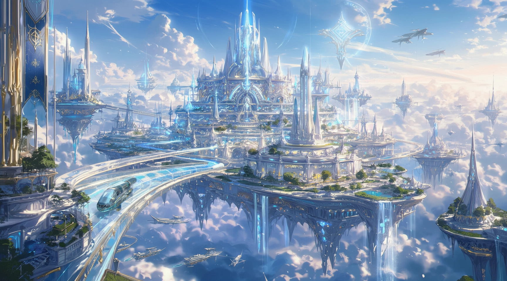

셀레스티아 소개
르셰연방의 수도, 공중부유특구 셀레스티아
셀레스티아는 대붕괴 이후 재건된 르셰연방의 수도이자, 현 인류 문명의 대표적인 공중도시입니다.
도시는 아카샤 코어를 중심으로 설계되었으며, 연방 행정망, 재난 대응망, 방어 시스템, 마나 에너지 모듈 관리 체계를 통합 운영하고 있습니다.


외부 방문객에게 셀레스티아는 하늘 위에 세워진 관광도시로 기억됩니다.
맑은 공기, 정돈된 거리, 고급 의료시설, 미술관, 쇼핑 라운지, 자동 배달 로봇과 무인 교통 시스템은 셀레스티아의 일상적인 풍경입니다.
셀레스티아는 단순한 관광도시가 아닙니다.
이 도시는 르셰연방의 데이터, 행정, 방어, 에너지 순환을 담당하는 중추입니다. 셀레스티아의 안정은 곧 연방 전체의 안정과 직결됩니다.